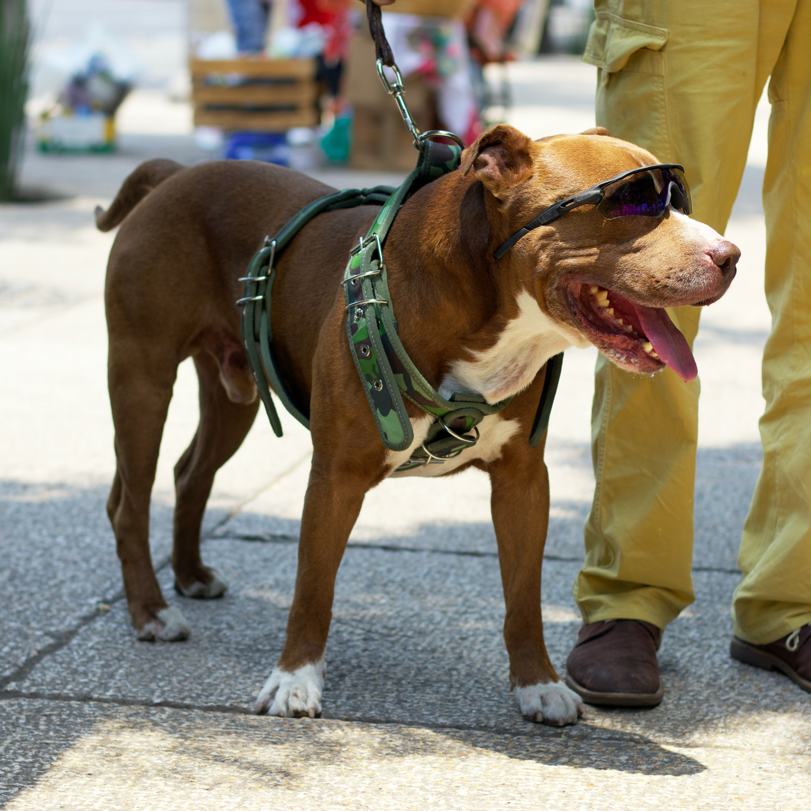
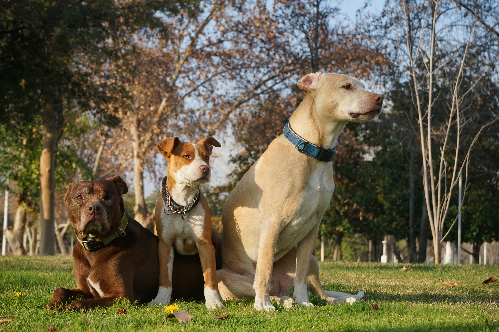

Bas has had enough of being so alone all the time so he got up one day and put on his best outfit and was determined to make a friend or two at the dog park.
by, Kuiyibo Campos Licensed under CC Pexels
He went in to the park with full confidence and showed who he was for those few hours in the park. At last Bas did it, he made some friends that made him feel warm inside. He has never had this feeling before.
"Dogs On Green Grass Field" by,Leonardo Merlo Licensed under